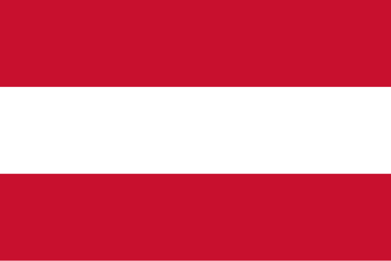

In south-central Europe hails the mountainous landlocked country of Austria.
Since January 1, 1995, Austria officially joined the European Union.
Throughout the 2nd millenium, Austria was a major imperial power and was at
one point the Holy Roman Empire's administrative capital. Hence, majority of
the country is Christian, more specifically Catholic.
Austria is also home to the Archduke Franz Ferdinand, whose assassination
was the catalyst to starting World War I.
Before World War II, Austria was occupied by Nazi Germany until its liberation
in 1945 and regained sovereignty.
Flag of Austria
| Capital City | Vienna |
|---|---|
| Official Language | German |
| Population | 9.042 mil (2022) |
| Area | 83,879 km² |
Built during the Baroque period, this palace was the summer residence of the Hasburg rulers, who were one of the most prominent dynasties in European history. This is the most popular tourist destination in Vienna and has many activities and sights to see on site.
Composed of two palaces, Lower and Upper Belvedere and another site, the Belvedere 21; it is an art museum in Vienna. Each site has different temporary exhibitions, apart from the Upper Belvedere which has a permanent exhibition of works from many famous artists including Vincent van Gogh and Claude Monet.
An UNESCO World Heritage Site which started to be developed from the earliest settlements since the 16th century. It's full of many medieval-era and Baroque era buildings. Everywhere you walk, you'll be able to find new places and markets to see and shop from.